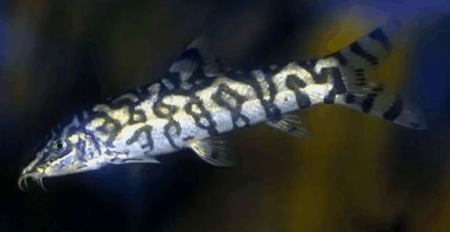
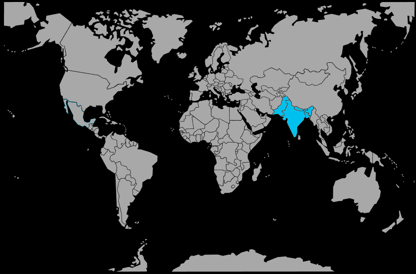

Systématique
- Ordre : Cypriniformes
- Famille : Botiidae
- Genre : Botia
- Espèce : B. lohachata
- Syn. : Botia almorhae (souvent considéré synonyme)

Botia lohachata, plus connue sous le nom de Loche yoyo ou Loche réticulée, est un poisson de fond originaire du sous-continent indien. Scientifiquement, il existe un débat et une confusion fréquente avec Botia almorhae, et les deux sont souvent traités comme la même espèce dans le commerce aquariophile.
Elle mesure généralement entre 10 et 15 cm à l'âge adulte. Son corps fusiforme présente une coloration argentée à dorée ornée de marbrures noires irrégulières. Chez les juvéniles, ces motifs forment souvent distinctement les lettres "Y-O-Y-O" sur les flancs, ce qui lui a valu son surnom anglais.
C'est un poisson sans écailles visibles, doté de quatre paires de barbillons sensoriels autour de la bouche. Comme les autres Botiidae, elle possède une épine sous-orbitaire érectile utilisée pour se défendre.
C'est un poisson strictement grégaire qui doit vivre en groupe hiérarchisé d'au moins 5 à 6 individus. Isolée, elle devient timide, stressée et peut dépérir ou devenir agressive envers les autres habitants.
Très active, curieuse et parfois remuante, elle occupe le fond de l'aquarium mais n'hésite pas à nager en pleine eau. Elle est connue pour émettre des "claquements" audibles (cliquetis) lorsqu'elle est excitée ou lors des repas. C'est un excellent chasseur d'escargots.
Mode : ovipare.
La reproduction en aquarium est extrêmement rare et accidentelle. Dans la nature, c'est une espèce migratrice qui remonte les cours d'eau pour frayer lors de la saison des pluies.
La quasi-totalité des spécimens disponibles dans le commerce proviennent d'élevages asiatiques utilisant des stimulations hormonales ou sont prélevés dans le milieu naturel.
Dimorphisme sexuel : Peu marqué. Les femelles matures sont généralement plus rondes et corpulentes que les mâles, surtout au niveau de l'abdomen.
Espérance de vie : Peut atteindre 15 à 20 ans dans de bonnes conditions.
Elle est originaire du nord de l'Inde, du Pakistan, du Népal et du Bangladesh. Elle fréquente les rivières à courant lent à modéré, avec un fond rocheux ou graveleux, où elle se cache parmi les pierres et les racines.
Répartition

Origine naturelle :
- Asie du Sud (Sous-continent indien).
- Inde.
- Pakistan.
- Népal.
- Bangladesh.
Paramètres de maintenance
Température : 24 à 30 °C.
pH : 6,0 à 7,5.
GH : 5 à 15 °dGH.
Volume conseillé : Minimum 200 à 250 L. C'est un poisson actif qui demande de l'espace de nage et doit être maintenu en groupe.
Régime alimentaire
Régime : omnivore à tendance carnivore.
Dans la nature, elle consomme des invertébrés aquatiques, des larves d'insectes et des mollusques.
En aquarium, elle est peu difficile mais vorace. Elle accepte les pastilles de fond, le vivant et le congelé (vers de vase, artémias). Elle est particulièrement efficace pour réguler les populations d'escargots (physes, planorbes) qu'elle aspire hors de leur coquille.